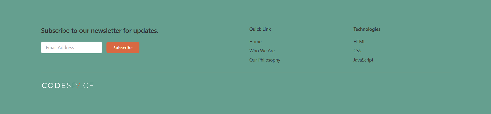
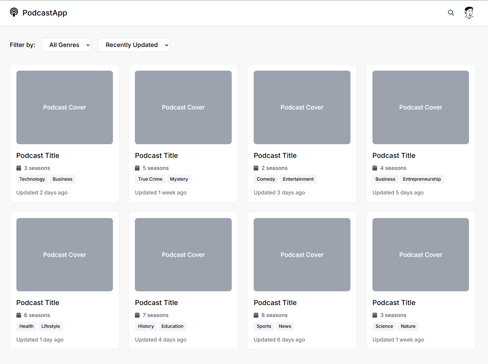

Project One: Tailwind Footer
This is a footer I created using Tailwind CSS. It features a clean and modern design, with a responsive layout that adapts to different screen sizes. The footer includes links to social media profiles, contact information, and a copyright notice. This was at the start of my coding journey, so the links were not fully functional.

Project Two: TODO App
This is a simple TODO app with a clean and intuitive user interface. The layout is fully responsive and provides a seamless experience across different devices. This section of the course was the first time I had worked with Javascript. The app has the ability to save, delete, and update tasks.and edit tasks. It comes with the ability to toggle dark and light mode as well.

Project Three: Podcast Website
This is a responsive podcast website I created using HTML, CSS, and JavaScript. The site features a modern design with a clean layout and intuitive user interface. This project was created using HTML, CSS, and JavaScript with React.